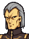
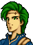

ワールドマップ
トラキア半島は二つの顔を持っている。The Thracia Peninsula has two faces.
北半島は豊かな大草原に
多くの小王国が分立し、The northern half is a land of rich grassy plains, divided among many small kingdoms,
南半島は険しい山々と不毛の大地に
竜騎士で知られるトラキア王国がある。while the southern half, among its harsh mountains and barren earth, holds the kingdom of Thracia, known for its dragon knights.
蛮勇をもって知られるトラキアは、Thracia, known for its reckless valor,
北の豊かな土地を手にいれるため
過去より何度も侵入をくり返してきたがhad repeatedly invaded in the past to seize the rich northern lands,
レンスター王家の抵抗によって
失敗をくりかえしてきた。but had failed again and again against the resistance of the Leonster royal family.
イード砂漠でレンスター軍を壊滅させ、
ようやく野望は達成されたかに見えたがIt seemed that annihilating Leonster's army in the Yied Desert had finally achieved that long-held ambition,
フリージ家のブルーム公子が
大軍をもってこの地方を制圧、but then Prince Bloom of House Friege conquered this region with his great host,
以後、北トラキア王国として
帝国の支配下におかれたのである。and ever since, it had remained under the Empire's control as the Kingdom of North Thracia.
それから十数年、
野心家のトラバント王もFrom then, for over a decade, even the ambitious King Travant
帝国の武力の前には
なんら手出しのしようもなく、found himself utterly unable to act against the Empire's military might,
不思議な平和が保たれていた。and a strange peace was maintained.
しかし、
解放軍による王都アルスターの制圧はBut the Liberation Army's capture of the capital, Alster,
この地方の微妙なバランスに
変化を与えた。upset the delicate balance of this region.
アルスター城、レンスター城は
セリスの解放軍が支配し、Alster Castle and Leonster Castle were now held by Celice's Liberation Army,
コノート城ではアルスターから
落ち延びたブルーム王が兵を集め、while at Conote Castle, King Bloom, having fled from Alster, gathered troops,
マンスター城では雷神の異名で知られる
イシュタル王女が、and at Manster Castle, Princess Ishtar, known by the epithet Thunder God,
トラキアに対する守りを固め、stood firm in her defenses against Thracia,
トラキア領ミーズでは
国王トラバントが、while in Thracian-held Miloah, King Travant,
前線司令官のマイコフ将軍とともに、
不気味な沈黙を守っていたtogether with his front-line commander General Mycoff, kept an uncanny silence.
人々の願いはただ一つ、The people's one and only wish was
この地方が
再びレンスター王家の支配に戻ること。that this land would once again return to the rule of the Leonster royal family.
そして、戦いの幕は上がった。And now, the curtain rose on a new battle.
Opening
(コノート軍が登場)
オープニング（コノート）

くそっ、反乱軍のヤツらめ
いいきになりおって(Bloom): Damn those rebels... getting too pleased with themselves.
ヴァンパよ、おまえたちまで
逃げ帰るとは、みそこなったぞ(Bloom): Vampa, even you three have come running back — I didn't expect that of you.

はっ、申し訳ございません
ですが、もうご心配にはおよびません(Fetra): My deepest apologies. But there's no need to worry anymore.
すでに
ムハマド将軍の軍団はアルスターに、(Fetra): General Muhamado's forces are already on their way to Alster,
オーヴォ将軍の騎士団は
レンスターに向けて進撃しており、
われわれも、いまから出撃いたします(Fetra): and General Ovo's knights are advancing on Leonster — we too will set out right away.
そうか・・・頼んだぞ
ところで、トラキアのトラバント王は
どうした、まだ救援にはこないのか(Bloom): I see... I'm counting on you. By the way, that King Travant of Thracia — what's he doing? Is he still not coming to help?
はい、何度も援軍の要請を
出しているのですが・・・(Fetra): Yes, we've sent requests for reinforcements many times, but...
くっ・・・やつめ、
いったいどういうつもりだ(Bloom): Damn it... what is that fellow thinking...
トラバント王は野心家です
信用するのは危険かと・・・(Fetra): King Travant is an ambitious man — trusting him seems dangerous to me...
そうだな
ヤツの力をかりずとも
反乱軍の制圧はできる(Bloom): You're right. Even without borrowing his strength, we can crush the rebels on our own.
ヴァンパ、フェトラ、エリウ、出ろ
こんどこそ、ヤツらの首をあげてこい！(Bloom): Vampa, Fetra, Elu, go. This time, bring me their heads for sure!
はっ、かならずや！(Fetra): Yes sir, without fail!
(コノート城から、ヴァンパ、フェトラ、エリウが登場)
(コノート城から、ブルーム率いるコノート軍が登場)
オープニング（マンスター）
セティ様、一体いつになったら
マンスターは我々の手に戻るのですか(Villager (man)): Lady Sety, when on earth will Manster return to our own hands?
ブルーム王の支配に苦しめられ
私たちはもう限界です！(Villager (man)): We're suffering under King Bloom's rule — we're at our limit!

希望をすててはだめです
セリス様の解放軍は
すぐそこまで来ている(Sety): Don't give up hope. Lord Celice's Liberation Army is almost here.
あと少しのがまんだと
皆に伝えてください(Sety): Please tell everyone to hold on just a little longer.
きっと自由はきます
私を信じて下さい！(Sety): Freedom will surely come. Please, trust me!
オープニング（ミーズ）
父上、ブルーム王が
救援をもとめてきました(Arion): Father, King Bloom has asked for our aid.
帝国は反乱軍に、
レンスター城、アルスター城を
奪われたようです(Arion): It seems the Empire has lost Leonster Castle and Alster Castle to the rebels.

セリスとかいう、
シグルドの小せがれか・・・(Travant): That brat they call Celice, Sigurd's little whelp...
あんな子供相手に苦戦するとは、
ブルームもおいぼれたか
アリオーンよ、ヤツらなどほおっておけ(Travant): For Bloom to struggle against a mere child like that, has he grown senile? Arion, just leave them be.
帝国軍と反乱軍を戦わせておいて、
両者が弱ったところを、
我がトラキア軍が叩く(Travant): Let the Empire and the rebels wear each other down fighting, and our Thracian army will strike when both sides are weakened.
やはり・・・
そうではないかと思っていました
父上はまだあのときのことを・・・(Arion): I thought as much... father, are you still thinking about that time...
忘れてたまるか！(Travant): How could I ever forget!
レンスターの騎士団を砂漠にほうむり、
ようやくトラキア半島の制圧を
なしえたかと思ったのに、(Travant): I buried the knights of Leonster in the desert, and thought I had finally achieved the conquest of the Thracia Peninsula,
ブルームのヤツがよこどりしおった
あのときの腹立たしさは、今も忘れぬ(Travant): and then that Bloom snatched it right out from under me. Even now, I haven't forgotten that fury.
グランベルと正面から戦えるほど、
われらには力がない
・・・父上のおきもち、おさっしします(Arion): We don't have the strength to face Grannvale head-on... father, I understand how you feel.
トラキア半島の統一はわれらが悲願
民をまずしさから救うためには
北の豊かな土地が必要なのだ(Travant): Unifying the Thracia Peninsula is our people's long-cherished dream. To save our people from poverty, we need that rich northern land.
われらがハイエナとさげすまれ、(Travant): We've been scorned as hyenas,
それでもなお他国に雇われて
戦ってきたのは、
それしか生きる道がなかったから(Travant): and even so, the only way we've managed to survive is by hiring ourselves out to fight for other nations.
アリオーン、俺は長い間がまんしてきた
だが、いまこそ立ち上がるときだ(Travant): Arion, I've endured this for a long time. But now is the time to rise up.
トラキアの運命は、
この一戦で決まるとおもえ(Travant): Thracia's fate will be decided in this one battle — remember that.
はっ・・・(Arion): Yes sir...
オープニング（アルスター）
セリス、なにやら雲行きが怪しいな
レンスターの守りは大丈夫か(Levin (Strategist)): Celice, something feels off — is Leonster's defense really secure?

けっして十分だとはいえません
援軍を出すべきでしょうか(Celice): I can't say it's fully sufficient. Should we send reinforcements?
うむ、コノートのブルーム王もこのまま
手をこまねいてはいないだろう(Levin (Strategist)): Mm, I doubt King Bloom of Conote will just sit idle after this.
それに、マンスターの市民たちも
助けを求めているという
軍事行動は早い方がよい(Levin (Strategist)): And besides, the people of Manster are asking for help too — the sooner we move, the better.
わかりました
ただちに出撃いたしましょう(Celice): Understood. Let's set out at once.
(リーフ、フィン、ナンナ（ジャンヌ）がレンスターに向かう)
1ターン目のコノート軍フェーズ
反乱軍など恐れるな！
アルスター城を取り戻せ(Muhamado): Don't fear the rebels! Take back Alster Castle.
命令に従わぬ者は、首をはねる、
よいな！
ヤツらを皆殺しにするのだ！(Muhamado): Anyone who disobeys orders will be beheaded, understand! Kill them all!
(ムハマド隊が進撃開始)
よし、準備はととのった
レンスターまで、一気に駆け抜ける
ムハマド将軍の部隊におくれをとるな！(Ovo): Alright, preparations are complete. Let's race straight to Leonster — don't let General Muhamado's unit get ahead of us!
(オーヴォ隊が進撃開始)
いよいよだねぇ
フェトラ、エリウ、行くわよ
今度こそ、しくじるんじゃないよ(Fetra): At last, it's begun. Fetra, Elu, let's go. Don't mess it up again this time.
(ヴァンパ、フェトラ、エリウが進撃開始)
3ターン目のコノート軍フェーズ（コノート）

ブルーム王、俺になにか用か(Fabal): King Bloom, you need something from me?
おおっ、ファバル、よく来てくれた
待っておったぞ(Bloom): Ah, Fabal, glad you came. I've been waiting.
俺はいそがしい
用があるならさっさと言え！(Fabal): I'm a busy man. If you need something, out with it!
ぐ・・・いや・・・他でもないが
ちょっと仕事を頼みたいのだ(Bloom): Ugh... well... it's nothing much, but I'd like you to do a little job for me.
仕事・・・？(Fabal): A job...?
うむっ、反乱軍のちんあつに
手をかしてほしいのだ(Bloom): Mm, I need your help suppressing the rebels.
断る・・・俺は傭兵だが、
汚い仕事はしない(Fabal): I refuse... I'm a mercenary, but I don't do dirty work.
だが、おまえは金がほしいのだろう
みなしごを大勢世話しているときいた(Bloom): But you need money, don't you. I hear you're taking care of a great many orphans.
おまえの妹も金がほしくて
盗みを働いているというではないか
妹を盗賊にしておいてよいのか(Bloom): And your sister needs money too, doesn't she — stealing for it, from what I hear. Are you content letting your sister be a thief?
パティは・・・
子供達のために無理してる・・・
金は・・・確かにほしい・・・(Fabal): Patty is... pushing herself for the children's sake... money... I certainly do need it...
ならば迷うことはあるまい
セリスの首をあげてくれれば
好きなだけ金をやる、妹も喜ぶだろう(Bloom): Then there's nothing to hesitate about. Bring me Celice's head, and I'll give you as much gold as you like — your sister will be pleased too.
・・・わかった
バカなことだが仕方がない・・・
今度だけは手伝ってやろう・・・(Fabal): ...understood. It's a foolish thing, but there's no helping it... this once, I'll lend you a hand.
(ファバルが登場)
5ターン目のコノート軍フェーズ（マンスター）
(イシュタルが登場し、コノートへワープ)

父上、お呼びとか、
なんのご用でしょう(Ishtar): Father, you called for me? What do you need?
おおっ、イシュタル、やっと来たか
解放軍が攻めてくるのだ
おまえの力がほしい、わしを守ってくれ(Bloom): Ah, Ishtar, you've finally come. The Liberation Army is attacking — I need your strength. Protect me.
これは、父上のお言葉とも思えません
反乱軍ごときに
何をあわてていらっしゃるのです(Ishtar): I can hardly believe you'd say such a thing, father. Mere rebels, and you're this flustered?
だがな、すでにおまえの兄の
イシュトーも討たれ
その上、ティニーまで失った(Bloom): But listen — your brother Ishtore has already been struck down, and we've lost Tinny too, on top of it.
ヴァンパ三姉妹もあてにはならぬ
この上はおまえの力を
借りるしかないのだ(Bloom): The three Vampa sisters can't be relied on either. All that's left is to borrow your strength.
わかりました、では、
私にトールハンマーをお与えください(Ishtar): Understood. In that case, give me the Thoron Hammer.
それさえあれば、
私一人でも敵を全滅させてみせます(Ishtar): With that alone, I can wipe out the enemy single-handedly.
な、なに？ トールハンマーだと・・・？！
うむむ、わかった・・・もって行け・・・
ただし、まちがいなくやってくれよ(Bloom): Wh-, what? The Thoron Hammer...? Hmm, very well... take it. But make absolutely sure you succeed.
わかっています、おまかせ下さい(Ishtar): I understand. Leave it to me.
12ターン目のコノート軍フェーズ
※イシュタル生存時— (only if Ishtar is still alive)
(ユリウスが登場)

イシュタルよ、
私とともにバーハラへ戻れ
おまえはこんなところで死んではならぬ(Julius): Ishtar, come back with me to Belhalla. You mustn't die in a place like this.
あっ、ユリウスさま・・・
でも、どうして・・・(Ishtar): Ah, Lord Julius... but, why...
私にはおまえが必要だ
私の力になってくれ(Julius): I need you. Lend me your strength.
は、はい！ 喜んで・・・ユリウスさま(Ishtar): Y-, yes! Gladly... Lord Julius.
(ユリウスとイシュタルがワープ)
会話（ユリア→セリス）

セリス様・・・(Julia): Lord Celice...
ユリア？ どうしたんだ？(Celice): Julia? What's wrong?
なんだか恐ろしいのです
このあたりには
邪悪な気配がただよっている気がします(Julia): I feel something terrifying... I sense an evil presence drifting somewhere nearby.
えっ？ どういうことだ？(Celice): Huh? What do you mean?
・・・・・・セリス、気をつけなさい・・・
イシュタルは恐ろしい敵・・・
戦ってはなりません・・・(Julia): .........Celice, be careful... Ishtar is a terrifying enemy... you mustn't fight her...
ユリア！？ ・・・どうした！！(Celice): Julia!? ...what's wrong!!
ハッ・・・わたし・・・いったい何を・・・(Julia): Huh... I... what did I just...
ユリア・・・きみは・・・(Celice): Julia... you...
(セリス、LUK+1)
会話（フィン→リーフ）

リーフ王子、
私達にはこの地方を守る義務があります(Finn): Prince Leaf, we have a duty to protect this region.
苦しい戦いになるでしょうが
ご辛抱下さい(Finn): It will be a hard fight, but please bear with it.

わかっているさ
私はこの日が来るのを
ずっと、ゆめ見ていた(Leaf): I know that already. I've long dreamed of this very day coming.
ブルーム王の圧政から人々を救い
トラキア半島に平和を取り戻すことは
亡き父上の遺志でもある(Leaf): Saving the people from King Bloom's tyranny and restoring peace to the Thracia Peninsula — this is also my late father's will.
たとえ戦場のつゆと消えようとも
悔いはないさ(Leaf): Even if I vanish like the morning dew on some battlefield, I have no regrets.
リーフ様、(Finn): Prince Leaf,
やがては王にもなろうという方が、
そんな軽はずみな事をいっては
なりません！(Finn): a man who will one day be king shouldn't speak so carelessly about such things!
そうだったな、すまない
おまえは帝国のきびしい追求の中で
幼かった私を守り育ててくれた(Leaf): You're right, I'm sorry. You protected and raised me through the Empire's harsh pursuit when I was still small.
自分はたべずとも、
私にはひもじい思いはさせなかった(Leaf): Going without food yourself, you never once let me go hungry.
それがどんなに大変な事か
今になって、ようやくわかるよ
フィン、本当に感謝しているんだ(Leaf): Only now do I truly understand how difficult that must have been. Finn, I really am grateful to you.
リーフ様、
戦乱にあけくれたトラキア半島の統一は
お父上が生涯のゆめとされた事です(Finn): Prince Leaf, unifying the Thracia Peninsula, torn by endless war, was your father's lifelong dream.
どうかお父上のご遺志をお継ぎ下さい
それができる方は
もはや王子しかおられないのです(Finn): Please, carry on your father's will — you are the only one left who can.
(リーフ、STR+3)
会話（アーサー（アミッド）→フィー（フェミナ））

フィー、気を付けろよ
空を飛べるからって
一人で行っちゃダメだ(Arthur): Fee, be careful. Just because you can fly doesn't mean you should go off alone.

あら、アーサー
心配してくれてるの？(Fee): Oh my, Arthur — are you worried about me?
ま・・・まあな・・・(Arthur): W-, well... I suppose...
ふーん・・・(Fee): Hmm...
アーサーって
他人には関心ない人だと思ってたのに
やさしいところもあるんだ(Fee): I always thought you weren't interested in other people, Arthur... but it turns out you have a kind side too.
少しだけ見直しちゃった(Fee): I've reconsidered my opinion of you, just a little.
フィーは特別だからな・・・(Arthur): You're special, Fee...
えっ・・・？(Fee): Eh...?
とにかく、あまり危ないことはするな！
じゃあな・・・(Arthur): Anyway, don't do anything too dangerous! See you...
アーサー・・・(Fee): Arthur...
(フィー、MHP+3)
ムハマド初戦時
くっ・・・反乱軍め・・・(Vampa): Damn... these rebels...
ムハマド撃破時
われらがこうも
たやすく敗れるとは・・・
ブルーム王よ、お許しあれ・・・(Muhamado): To think we'd be defeated so easily... King Bloom, forgive me...
オーヴォ初戦時
なかなかやるな
しかしそれも、ここまでだ！(Ovo): Not bad at all... but it ends here!
オーヴォ撃破時

ば、ばかな・・・(Pamela): Th-, that can't be...
ヴァンパ初戦時
くらえ！ エルファイアー！！(Fetra): Take this! Elfire!!
ヴァンパ撃破時
ああ、無念だ・・・
フェトラ、エリウ・・・(Fetra): Ahh, how regrettable... Fetra, Elu...
フェトラ初戦時
くらえ！ エルウインド！！(Vampa): Take this! Elwind!!
フェトラ撃破時
くっ・・・反乱軍め・・・(Vampa): Damn... these rebels...
エリウ初戦時
くらえ！ エルサンダー！！(Elu): Take this! Elthunder!!
エリウ撃破時
ヴァンパ、フェトラ・・・
これまでだな・・・(Elu): Vampa, Fetra... this is the end...
ファバル（アサエロ）初戦時
すまない・・・
これも金のためだ・・・(Fabal): I'm sorry... this is for the money too...
ファバル（アサエロ）撃破時
パティ・・・
にいちゃんを許せ・・・(Fabal): Patty... forgive your brother...
会話（パティ（デイジー）→ファバル（アサエロ））

おにいちゃん！？
こんなところで何してるのよ(Patty): Big brother!? What are you doing in a place like this!
まさかブルームに
雇われてるのじゃないでしょうね！(Patty): Don't tell me you've been hired by Bloom!
パティ？
おまえこそどうして反乱軍に！？(Fabal): Patty? Why are you with the rebels!?
もちろんみんなを助けるためよ
みんなで力をあわせて
ブルーム王をやっつけるの(Patty): To help everyone, of course. We're all joining our strength together to beat King Bloom.
おにいちゃん、忘れたの？
子供たちの両親は
帝国軍によって殺されたのよ(Patty): Big brother, have you forgotten? The children's parents were killed by the imperial army.
その帝国軍に協力するなんて、
おにいちゃん、
いったい何をかんがえてるのよ！(Patty): And you're cooperating with that very same army — big brother, what on earth are you thinking!
パティ・・・すまん
おまえの言うとおりだ
俺・・・どうかしてた(Fabal): Patty... I'm sorry... you're right... I... I don't know what got into me.
はんせいだけなら誰でもできるわ
悪いと思うならお兄ちゃんも協力してよ
みんなで平和をとりもどすの！(Patty): Anyone can say they're sorry. If you really mean it, then lend your help too, big brother — let's bring back peace, all of us together!
わかったよ、パティ
しかしおまえ、なんだか変わったなぁ・・・(Fabal): Alright, Patty. But you, you've changed quite a bit, haven't you...
ふふっ・・・まあね・・・(Patty): Heh... well, maybe...
会話（ファバル（アサエロ）→セリス）
セリス皇子、すまなかった
許してくれ(Fabal): Prince Celice, I'm sorry. Please forgive me.
ファバルだね
パティから話はきいた(Celice): You must be Fabal. I heard the story from Patty.
いろいろと事情があったようだね
私は気にしていない(Celice): It sounds like there were various circumstances involved. I don't hold it against you.
いや、俺はまちがっていた
帝国にやとわれるなんて
なんてバカな事を・・・俺は恥ずかしい(Fabal): No, I was in the wrong. To let myself be hired by the Empire, what a foolish thing to do... I'm ashamed of myself.
セリス皇子、
このつぐないはさせてもらうからな(Fabal): Prince Celice, let me make up for it.
ありがとうファバル、よろしくたのむよ(Celice): Thank you, Fabal. I'll be counting on you.
フィーがアルスター南東の高い山で待機したとき
ふー、ずいぶん高い所まで来たわね
お兄ちゃんはどこにいるのかしら？
マーニャ、大丈夫？ まだ飛べる？(Fee): Phew, we've come up quite high. I wonder where my brother could be. Mana, are you alright? Can you still fly?
お前にはシレジアの英雄と呼ばれている
おばさまの名前がついてるんだもの
これくらいじゃ、へこたれないわよね(Fee): You're named after that aunt of mine, the hero known throughout Silesse — this much shouldn't be enough to wear you down, right?
平和になったら
一緒にシレジアへ帰ろうね(Fee): Once things are peaceful, let's go back to Silesse together.
それとも・・フフ、
誰かステキな人の所へでも
およめに行こうかしら(Fee): Or else... heh, maybe I'll go off to marry some wonderful person.
どちらにしても、
もう少しがんばらなくっちゃね！(Fee): Either way, I need to do my best a little longer!
リンダが中央の森で待機したとき
おおっ人間だ！ 助かった！！(Villager (man)): Oh, a person! We're saved!!

どうしたの？(Linda): What's wrong?
ああ、解放軍に加えてもらおうと思って
旅に出たんだが、道に迷ってしまって・・・(Villager (man)): Ah, I set out on a journey hoping to join the Liberation Army, but I got lost on the way...
あんた、どうしてこんな山の中に？(Villager (man)): How'd you end up in a place like this, in these mountains?
わたしはセリス様と共に
平和のために戦ってるのよ(Linda): I'm fighting for peace, together with Lord Celice.
じゃあ、あんた解放軍の人なのかい！
ハハハ！ こんなところで
解放軍に会えるなんて・・・(Villager (man)): So you really are with the Liberation Army! Hah, to think I'd meet someone from the Liberation Army in a place like this...
なさけない話だが、
おじけづいて
村へ帰ろうと思ってたところなんだ(Villager (man)): I hate to admit it, but I'd lost my nerve and was just about to head back to the village.
恋人のアンナも心配してるだろうし・・・(Villager (man)): My sweetheart Anna must be worried too...
そう・・・、
いっしょに戦えたらよかったのに・・・(Linda): I see... I wish we could have fought together...
まあ俺はシューターで
ほとんど身動きとれねえから(Villager (man)): Well, I'm just a shooter, so I can barely move around on the battlefield anyway.
仲間に入れてもらってても
足をひっぱるだけだっただろうしな(Villager (man)): Even if you'd let me join, I'd probably have just held everyone back.
そうだ、
あんたの名前を教えてくれるかい？(Villager (man)): That's right, could you tell me your name?
わたしはリンダ(Linda): My name is Linda.
リンダ？
どこかできいた名だな・・・・・(Villager (man)): Linda? That name sounds familiar somehow.........
まぁいいや、
あんたにこのまよけをやるよ
俺にはもう必要ないからな(Villager (man)): Well, never mind — here, I'll give you this ward charm. I don't need it anymore.
ありがとう・・・(Linda): Thank you...
じゃあな、がんばりなよ
あんたにナーガのご加護のあらんことを！(Villager (man)): Well then, good luck — may Naga's blessing be with you!
(リンダ、MDF+3)
アミッドが中央の森で待機したとき
おおっ人間だ！ 助かった！！(Villager (man)): Oh, a person! We're saved!!

どうしたんです？(Amid): What's wrong?
話せば長くなるんだが
いろいろあってな(Villager (man)): It's a long story, but a lot has happened...
道に迷ってるところを
解放軍のリンダっていう子に
助けてもらったんだが、(Villager (man)): I got lost on the way, and a girl from the Liberation Army named Linda helped me out,
なさけない事に
またこうして道に迷ってるんだ(Villager (man)): but I hate to admit it, here I am lost again.
そうですか、リンダは私の妹です
私はアミッド
私に出来る事があればお助けしましょう(Amid): I see. Linda is my little sister. I'm Amid — if there's anything I can do, let me help.
じゃあ、あんた
リンダちゃんのお兄さんなのかい！(Villager (man)): Wait, so you're... Linda's big brother!
ハハハ！ こんなところで会うなんて
・・・なさけない・・・(Villager (man)): Hah! To think I'd meet you of all people here... ...how embarrassing...
そう落ちこまないで、もう大丈夫、
しばらく私と一緒に行きましょう
敵が現れたら私の後ろに隠れて下さい(Amid): Don't be so down on yourself, it's alright now. Come along with me for a while — if an enemy appears, just hide behind me.
・・・あんた、いいひとだな・・・
しかも兄妹そろって・・・(Villager (man)): ...you're a good person... and both you and your sister, too...
困った時は、おたがいさまですよ(Amid): When we're in trouble, we help each other out, that's all.
・・・いい人だ、あんたいい人だぁ・・・(Villager (man)): ...you're a good person, really a good person...
あんたにも、このまよけをやるよ
実はもしもって時の為に
もうひとつ持ってたんだ・・・、へへっ(Villager (man)): Here, I'll give you a ward charm too — actually, I happened to have another one, just in case... heh heh.
そうですか、
ありがたくもらっておきます(Amid): Is that so? Then I'll gratefully accept it.
よーしっ、俺も帰ったら
アンナと一緒に
あんたらみたいな子供をつくるぞ！(Villager (man)): Alright then, once I get back home, Anna and I will make kids just like you two!
その前に、この山をこえなくてはね、
さあ行きますよ(Amid): Before that, we need to cross this mountain — come now, let's go.
ちょっと待ってくれよ
俺はあんまり移動力がないんだからな！(Villager (man)): Wait just a moment! I don't have much movement range, you know!
(アミッド、MDF+3)
Ishtar: battle quote
すまない・・・死んでもらう！
トールハンマー！！(Ishtar): I'm sorry... but you'll have to die! Thoron Hammer!!
イシュタル撃破時
ああ・・・ユリウス様・・・(Ishtar): Ahh... Lord Julius...
(ユリウスが登場)
イシュタルよ、
私とともにバーハラへ戻れ
おまえはこんなところで死んではならぬ(Julius): Ishtar, come back with me to Belhalla. You mustn't die in a place like this.
あっ、ユリウスさま・・・
でも、どうして・・・(Ishtar): Ah, Lord Julius... but, why...
私にはおまえが必要だ
私の力になってくれ(Julius): I need you. Lend me your strength.
は、はい！ 喜んで・・・ユリウスさま(Ishtar): Y-, yes! Gladly... Lord Julius.
(ユリウスとイシュタルがワープで撤退)
ブルーム初戦時
くっ・・・これはいったい
どうしたことだ
きさまら・・・ゆるさんぞ！(Bloom): Damn it... what on earth is happening... you rebels... I'll never forgive you!
ブルーム撃破時
ぐぐっ・・・無念だ・・・(Bloom): Guh... how regrettable...
コノート城制圧時
どうやら帝国の勢力はついえたようだな
残った兵士達もコノートの陥落をきいて
敗走したようだ(Levin (Strategist)): It seems the Empire's power here has finally run its course. The remaining soldiers, hearing of Conote's fall, seem to have fled.
ではマンスターの解放も
すぐに実現できますね(Celice): Then Manster's liberation should be realized soon too.
そうだと良いのだがな
問題はトラキアだ・・・(Levin (Strategist)): I'd like to think so. The problem is Thracia...
しかしトラキアは中立を保っています
われらに敵対するとは思えないのですが(Celice): But Thracia has maintained neutrality. I don't think they'd turn against us.
おまえはトラバント王をしらないから
そんなことがいえる、リーフ王子は
トラバントに両親と姉を殺された(Levin (Strategist)): You can say that because you don't know King Travant. Prince Leaf had his parents and sister killed by Travant,
それも騎士にあるまじき卑劣な方法でな
油断してはならぬ、
ヤツはきっと何かたくらんでいる・・・(Levin (Strategist)): and in a way utterly unbecoming of a knight, too. Don't let your guard down — he's surely scheming something...
(「コノート城 をせいあつした！」)
コノート城制圧直後のセリス軍フェーズ終了後（ミーズ）
ふふふ・・・ブルームが死んだか
帝国の勢力はこれで一掃されたな(Travant): Hehehe... so Bloom is dead. That sweeps away the Empire's power here entirely.
よし、今がチャンスだ
手始めにマンスターを奪う(Travant): Alright, now's our chance. First, we'll take Manster.
アルテナ、コルータと共に
マンスターを攻略せよ(Travant): Altena, go with Coulter and take Manster.
手向かう者がいれば
市民とて容赦はいらぬ
皆殺しにせよ！(Travant): If anyone resists, show no mercy even to civilians — kill them all!

お待ちください、父上！
敵が帝国ならば喜んで戦いますが、
無力な民を殺すなど無意味なことです(Altena): Please wait, father! If the enemy is the Empire, I'll fight gladly, but killing powerless civilians is meaningless.
解放軍とは協力しあえるはず
なぜ戦わねばならぬのです！(Altena): We ought to be able to cooperate with the Liberation Army — why must we fight them!
アルテナ！ わしに説教するつもりか
おまえはわしの言うとおりにすればよい
口答えは許さんぞ！(Travant): Altena! Are you trying to lecture me? You should just do as I say. I won't tolerate any back-talk!
しかし・・・(Altena): But...
アルテナ、父上の言われるとおりにしろ
私と父上は次の戦いに備えて
国にもどらねばならん(Arion): Altena, do as father says. Father and I must return to the capital to prepare for the next battle.
前線を守るのはおまえしかいないのだ(Arion): You're the only one who can hold the front line.
兄上・・・わかりました・・・(Altena): Brother... understood...
わかったならグズグズするな！ 行け！！(Travant): Now that you understand, stop dawdling! Go!!
(アルテナが登場)
アルテナめ、やっと出撃したか・・・
なんという気の強い娘だ(Travant): Altena finally set out, did she... what a strong-willed girl.
あれの母親も、気丈な女だった
血は争えんな(Travant): Her mother too was a woman of strong spirit. Blood doesn't lie, I suppose.
父上、アルテナに悪気はないのです
どうか、大目に見てやってください(Arion): Father, Altena means no harm. Please, go easy on her.
わかっておる！
アリオーン、トラキア本城にもどるぞ(Travant): I know that already! Arion, let's return to the Thracian capital.
大軍を率いて、
一気に半島を制圧するのだ(Travant): We'll lead a great army and take the whole peninsula in one stroke.
マイコフ、ミーズ城はお前にまかせる
アルテナとともに、
我らがもどるまで死守せよ！(Travant): Mycoff, I leave Miloah Castle to you. Hold it to the death, together with Altena, until we return!!
はっ、かしこまりました(Mycoff): Yes sir, understood.
(トラバントとアリオーンがマップ下へ去る)
(ミーズ城から、マイコフ率いるミーズ軍が登場)
コノート城制圧直後のセリス軍フェーズ終了後（マンスター）
セティ様、大変です！ ミーズの城から
トラキアの竜騎士団が出ました
この城に向かっています(Villager (man)): Lady Sety, this is terrible! Thracia's dragon knight corps has set out from Miloah Castle, heading for this castle.
えっ？ ようやく帝国の支配から
街を取り返したというのに、
今度はトラキアが！？(Sety): What? After we finally took the town back from the Empire's rule,
トラバント王がついに
本性をあらわしたのか！(Sety): has King Travant finally revealed his true colors!
解放軍はまだ河をわたっていません
私たちはいったい
どうすればよいのでしょう(Villager (man)): The Liberation Army hasn't crossed the river yet. Whatever should we do?
あなたたちはコノートへ逃げて下さい
しばらくの間なら、
私一人で敵をくい止めます(Sety): All of you, please flee to Conote. For a while, at least, I'll hold off the enemy by myself.
セティ様、それは無理です
一人でくいとめるなんて、そんなこと・・・
それではあなたが死んでしまいます(Villager (woman)): Lady Sety, that's impossible. Holding them off alone, something like that... you'll die!
もとより覚悟の上
でも、心配はいらない
そうはむざむざとやられないよ(Sety): I was prepared for this from the start. But don't worry — I won't go down so easily.
さあ、もう時間がない
早く行って下さい！(Sety): Now, there's no time left. Please, go quickly!
セティ様・・・(Villager (woman)): Lady Sety...
(マンスター城から、セティ、シビリアンが登場)
コノート城制圧から4ターン経過後のミーズ軍フェーズ

アルテナ様、いかがなさいました？
マンスター城は目前です
すぐに攻撃を始めましょう(Coulter): Lady Altena, what's wrong? Manster Castle is right before us — let's begin the attack at once.
まて、コルータ・・・
相手はただの市民ではないか
殺す必要などなかろう(Altena): Wait, Coulter... our opponents are just civilians. There's no need to kill them.
私が降伏するよう話をする
少し待て！(Altena): I'll talk to them, try to get them to surrender. Wait a little.
そうはいきません
私は国王から固く言われています(Coulter): That won't do. I've been firmly instructed by the king.
アルテナ様がどう言われようとも、
攻撃の手をゆるめてはならぬと(Coulter): No matter what you say, Lady Altena, we're not to loosen our attack.
指揮官は私だ
その私の命令がきけぬというのか！(Altena): I am the commander here. Are you saying you won't heed my orders!
これは私の部隊です
アルテナ様がおいやなら
ここに残って見ていて下さい(Coulter): This is my unit. If you don't like it, Lady Altena, you may stay here and watch.
われわれだけでまいります
全軍、突撃せよ！
ヤツらを皆殺しにする！(Coulter): We'll go on without you. All troops, charge! We'll kill every last one of them!
ま、まて！ コルータ！！(Altena): W-, wait! Coulter!!
会話（セリス→セティ（ホーク））
勇者セティ、
市民達を助けてくれて礼を言います(Celice): Brave Sety, thank you for helping the townspeople.
セリス様・・・私は待っていました
ずっとこの時がくるのを(Sety): Lord Celice... I have been waiting. Waiting for this moment to come, all this time.
セリス様、世界をお救い下さい
多くの民は絶望の中にあります(Sety): Lord Celice, please save the world. So many people are in the depths of despair.
このマンスターでも
多くの子供達が囚われ
ミレトスの神殿に送られました(Sety): Even here in Manster, many children have been captured and sent off to the Temple of Miletos.
私は・・・子供達を救えなかったのです
私は勇者などではない
ただの、おくびょう者です・・・(Sety): I... I couldn't save the children. I'm no hero. I'm nothing but a coward...
セティ、それはちがう
私だって一人ではなにもできない(Celice): Sety, that's not true. I can't do anything alone either.
みんなの力があって、
ここまで来たのです(Celice): It's only with everyone's strength that I've come this far.
勇者セティ、あなたの力がほしい
どうか私に力を与えて下さい(Celice): Brave Sety, I want your strength. Please, lend me your power.
はい、セリス様・・・
どこまでもご一緒にまいります！(Sety): Yes, Lord Celice... I will go with you, wherever that may be!
セティがセリス軍に加わった直後のミーズ軍フェーズ
マンスター城に反乱軍が到着しただと？
ぐぐっ・・・アルテナ様は
いったいなにをしておられるのだ！(Mycoff): The rebels have reached Manster Castle, you say? Damn it... what on earth is Lady Altena doing!
やむをえん、全軍、守りを固めよ
トラバント様が戻られるまで
この城を死守するのだ！！(Mycoff): There's no helping it — all troops, strengthen our defenses! We'll hold this castle to the death, until Lord Travant returns!!
会話（セティ→セリス）
あっ、セリス様！？
・・・あなたのお側にいる方は・・・(Sety): Ah, Lord Celice!? ...and who is the one at your side...?
やあ、セティ
彼はレヴィンさ、私の軍師なんだよ(Celice): Hey there, Sety. He's Levin, my strategist.
レヴィン・・・やはり父上でしたか・・・(Sety): Levin... so it really was you, father...
セティ、気がついたようだな
久しぶりだな、元気か？(Levin (Strategist)): Sety, so you've noticed, have you. It's been a long time — are you well?
元気かではありませんよ！！
ずっと捜していたのです(Sety): Don't ask if I'm well!! I've been searching for you this whole time.
国を出られて
もう何年になると思うのですか！(Sety): Do you have any idea how many years it's been since you left our country!
そういえばもう何年になるかな
フュリーは元気でいるか？(Levin (Strategist)): Come to think of it, how many years has it been? Is Fury doing well?
あなたと言う人は・・・
母上は亡くなりました！(Sety): How can you... mother has passed away!
亡くなる前に、
なんとか一目でもお会いしてほしくて
私は父上を捜す旅に出たのです(Sety): Before she died, she wished so badly to see you, even just once, that I set out on a journey to find you, father.
そうか・・・フュリーが・・・
それは可哀想な事をした・・・(Levin (Strategist)): I see... so Fury... that's a terrible thing to have happened...
父上、あなたは冷たい人だ
母上の死をきいても
涙ひとつ流されない・・・(Sety): Father, you're a cold man. Even hearing of mother's death, you don't shed a single tear...
・・・・・・(Levin (Strategist)): .........
フィーもあなたをうらんでいました
自分からは口をきかないと
決めていたようです(Sety): Fee resented you too. She decided she wouldn't speak to you herself.
父上はごぞんじなのでしょう
なぜ声をかけてやらないのです？(Sety): Surely you must know why, father — why don't you ever reach out to her?
セティ、私には妻も子もいない
そう決めたのだ
おまえもそのつもりでいろ・・・(Levin (Strategist)): Sety, I have neither wife nor child — that's the decision I made. You should think the same of yourself...
父上・・・！？(Sety): Father...!?
(セティ、LUK+3)
会話（フィー→セティ）
セティ・・・
セティお兄ちゃんでしょ！(Fee): Sety... you're my brother Sety, aren't you!
おまえは・・・フィーか！？
どうした！
おまえがなぜここに？(Sety): You're... Fee!? What's wrong! Why are you here?
お兄ちゃんを捜しに来たの
だってシレジアを出たきり
帰ってこないんだもの！(Fee): I came looking for you, brother. Because you left Silesse and never came back!
すまない・・・
父上を捜すうちに
マンスターに流れ着いたのだが(Sety): I'm sorry... while I was searching for father, I ended up drifting here to Manster,
この国の人達があまりに哀れで
帰れなくなってしまった・・・(Sety): and the people of this country were just too pitiable, so I couldn't bring myself to leave...
お兄ちゃんらしいね・・・
いいのよ、あたしは
そんなお兄ちゃんが大好きだから(Fee): That's so like you, brother... it's alright, I love that about you.
おまえは解放軍に参加したのか？(Sety): Have you joined the Liberation Army?
うん、セリス様の力になりたくて(Fee): Yes, I wanted to be of help to Lord Celice.
そうか・・・
やっぱりおまえも母上の子だな・・・(Sety): I see... you really are mother's child too, after all...
困っている人を見ると
ほうっておけないようだ(Sety): It seems you can't just stand by and watch when someone's in trouble.
そういうお兄ちゃんだって・・・
でも、フュリー母さまはかわいそう
わたし、お父さまを許せない！(Fee): You're just as much that way yourself, brother... but poor mother Fury — I can't forgive father!
父上か・・・あの人は不思議な人だ
いったい何をかんがえているのか・・・(Sety): Father, huh... that man really is a mystery. I wonder what he's thinking, deep down...
(セティ、LUK+1)
会話（フェミナ→ホーク）

お兄ちゃん・・・
ホークお兄にいちゃんでしょ！(Femina): Brother... you're brother Hawk, aren't you!
おまえは・・・フェミナか！？
どうした！
なぜこんなところに？(Hawk): You're... Femina!? What's wrong! Why are you in a place like this?
お兄ちゃんを捜しに来たの
だってシレジアを出たきり
帰ってこないんだもの！(Femina): I came looking for you, brother. Because you left Silesse and never came back!
すまない・・・
オヤジを捜すうちに
マンスター国に流れ着いたんだけど(Hawk): I'm sorry... while I was searching for the old man, I ended up drifting here to the kingdom of Manster,
この国の人達があまりに哀れで
帰れなくなってしまった・・・(Hawk): and the people of this country were just too pitiable, so I couldn't bring myself to leave...
お兄ちゃんらしいね・・・
いいのよ、あたしは
そんなお兄ちゃんが大好きだから(Femina): That's so like you, brother... it's alright, I love that about you.
おまえは解放軍に参加したのか？(Hawk): Have you joined the Liberation Army?
うん、セリス様の力になりたくて(Femina): Yes, I wanted to be of help to Lord Celice.
そうか・・・フェミナは小さいころから
シグルド様にあこがれていたものな(Hawk): I see... Femina, you've admired Lord Sigurd ever since you were small, haven't you.
うん、あたしね、
フュリー様のような天馬騎士になるのが
ゆめだったの(Femina): Yeah, me, I always dreamed of becoming a pegasus knight like Lady Fury.
お兄ちゃん、見ててね
あたし、がんばるからね！(Femina): Watch me, brother — I'll do my best, okay!
(ホーク、LUK+1)
マナがセリスに隣接したとき

セリスさま・・・(Mana): Lord Celice...
ああ、マナどうしたんだい？(Celice): Ah, Mana, what's wrong?
セリスさま、わたし恐いんです
イザークを出るときには
えらそうなことを言ったけど(Mana): Lord Celice, I'm scared. When we left Isaac, I said such big, confident things,
みんなが戦っているのを見ていたら
そのうち、
誰か死んでしまうんじゃないかって・・・(Mana): but watching everyone fight like this, I keep thinking someone's going to end up dead...
マナ・・・(Celice): Mana...
セリスさまは
あの女魔道士を見ましたか？
あの人、またたくまに姿が消えました(Mana): Lord Celice, did you see that female mage? She vanished in the blink of an eye.
何か私たちには想像もつかないような
邪悪な力が働いてるような気がします(Mana): I feel like some evil power beyond our imagination is at work.
・・・マナ、
実を言うと私も恐いんだよ
恐くてねむれない夜もあるくらいだ・・・(Celice): ...Mana, to tell you the truth, I'm scared too. There are nights I'm too frightened to sleep...
できればいっそ
この世界から逃げ出せたら、と思うよ
でもねマナ、私は逃げたりしない(Celice): If I could, I think I'd just want to run away from this whole world. But you know, Mana, I won't run.
アルスターや
コノートの人々を見ただろう(Celice): You saw the people of Alster, and of Conote, didn't you.
私たちが街を解放したとき
みんな涙を流して喜んでくれた
それほど帝国の支配はひどかったんだよ(Celice): When we liberated those towns, everyone wept with joy — that's how terrible the Empire's rule truly was.
世界をこのまま放ってはおけない
私たちには人々を救う義務があるんだ(Celice): I can't just leave the world as it is. We have a duty to save its people.
・・・セリス様ごめんなさい
心配させてしまって、もう大丈夫です
わたしもがんばります(Mana): ...Lord Celice, I'm sorry for worrying you. I'll be alright now. I'll do my best too.
でも、絶対に無理はしないでくださいね
死んでしまっては何もならないから・・・(Mana): But please, don't push yourself too hard either — if you died, it would all be for nothing...
ありがとうマナ、
私にはきみが必要だ・・・(Celice): Thank you, Mana. I need you with me...
セリスさま・・・(Mana): Lord Celice...
(マナ、LUK+5)
会話（セリス→ティニー（リンダ））
ティニー、
きみはイシュタル王女を
知っているのか？(Celice): Tinny, do you know Princess Ishtar?

はい、イシュタル様は
わたしを妹のように
可愛がって下さいました(Tinny): Yes, Lady Ishtar always doted on me like a little sister.
彼女を迎えに来た少年は誰なのだろう(Celice): I wonder who that boy was, the one who came to fetch her.
たぶん・・・ユリウス皇子です(Tinny): Probably... Prince Julius.
えっ、ユリウス皇子だって！？(Celice): What, Prince Julius!?
はい、お二人は愛し合っておられます
だから、イシュタル様を・・・(Tinny): Yes, the two of them love each other deeply. That's why he came for Lady Ishtar...
きみはユリウス皇子を知っているの？(Celice): You know Prince Julius?
バーハラの都で何度かお会いしました
何と言えばよいのか・・・(Tinny): I met him a few times in the capital, Belhalla. How should I put it...
人をひきつける不思議な力と、
・・・氷のような冷たさを持った
恐ろしい方です(Tinny): He has a strange power that draws people in, and... an icy coldness. A frightening man.
まるで人間ではないような・・・(Tinny): He hardly seems human at all...
(ティニー、MHP+3)
会話（ナンナ→アレス）

あなたがアレス？(Nanna): Are you Ares?

ああ、そうだが、俺に何か用か？(Ares): Yeah, that's right. What do you want with me?
あなたはエルトシャン王の子と
ききましたが本当ですか？(Nanna): I heard you're the son of King Eltshan — is that true?
そうだが、なぜそんな事をきく？(Ares): That's right, but why do you ask?
ああっ、やっぱり本当でしたか！
私はナンナ、エルトシャン王の妹
ラケシスの子です！(Nanna): Ahh, so it really was true! I'm Nanna — the daughter of Lachesis, King Eltshan's younger sister!
な、なんだと！？
おば上の子だと言うのか！(Ares): Wh-, what did you say!? You're saying you're my aunt's daughter!
はい、母はあなたの事を
ずっと心配していました(Nanna): Yes, mother has been worried about you this whole time.
レンスターに来たのも
あなたを捜すためだったようです(Nanna): I believe part of the reason we came to Leonster was to search for you too.
俺の父上はアグストリアが
戦乱になることを予期されて(Ares): My father, foreseeing that Agustria would fall into chaos,
病弱の母と幼い俺を
レンスターの実家に預けられたそうだ(Ares): entrusted my sickly mother and young me to our relatives in Leonster.
しかしそのレンスターも
帝国軍に侵略されて
戦火の中で母上は死んだ・・・(Ares): But then Leonster too was invaded by the Empire, and amid the flames of war, my mother died...
それでジャバローに？(Nanna): And that's when Jabarro found you?
ああ、ヤツは俺をひろって育ててくれた
俺はヤツの傭兵軍団と共に
世界をわたり歩いてきたのだ(Ares): Yes, he took me in and raised me. I've traveled the world ever since, together with his mercenary company.
だから会えなかったのね・・・
アレス、ラケシス母様から
預かっていたものがあるの(Nanna): So that's why we couldn't find you... Ares, there's something Mother Lachesis entrusted to me for you.
うん？ ・・・こ、これは？
・・・父上の！？(Ares): Hm? ...wh-, what is this? ...my father's...!?
そう、エルトシャン王から
あなたにあてた手紙です(Nanna): Yes, it's a letter addressed to you, from King Eltshan.
！ ・・・・・・な、なんと・・・(Ares): ! .........wh-, what is this...
ねっ、わかったでしょう
エルトシャン王はシグルド様を
最後まで信頼されていたのよ(Nanna): There, you see? King Eltshan trusted Lord Sigurd right up to the very end.
お二人は真の親友だったと思う(Nanna): I believe the two of them were truly close friends.
そうだったのか・・・
俺は・・・まちがっていたようだ・・・(Ares): So that's how it was... I... I seem to have been mistaken...
アレス、セリス様を守ってあげて
あなたの力が必要なの！(Nanna): Ares, please protect Lord Celice. We need your strength!
・・・わかったよナンナ(Ares): ...understood, Nanna.
おまえには剣を教えてやろう
俺の力、とくとみるがいい(Ares): I'll teach you swordsmanship. Watch closely and see just what I can do.
(ナンナ、STR+2,DEF+2)
リーフがアルテナから射程5の範囲に待機したとき
ん？ ・・・あそこに見えるのは
トラキアの女竜騎士！
・・・でも、なんだか悲しい目をしている・・・(Leaf): Hm? ...what's that I see over there — a Thracian lady dragon knight! ...but somehow, her eyes look so sad...
シビリアンを助けたとき
セリス様の解放軍？
やっときてくれたのか！！(Villager (man)): Lord Celice's Liberation Army? You finally came!!
ありがたい、たすかったぜ！(Villager (man)): Thank goodness, we're saved!
セリス様、ばんざ～い(Villager (man)): Lord Celice, hooray!
ああ、戦士さま・・・
ありがとうございます！(Villager (woman)): Ahh, warrior... thank you so much!
お願いです
セティさまをおたすけください(Villager (woman)): Please, I beg you — help Lady Sety.
トラキアの竜騎士がおそってきます
どうかお気をつけて・・・(Villager (woman)): Thracia's dragon knights are attacking — please, be careful...
Coulter: battle quote
ふふふ・・・
悪いが、死んでもらうぞ(Coulter): Hehehe... sorry, but you'll have to die.
コルータ撃破時
トラキアに栄光あれ！
・・・ぐふっ(Coulter): Glory to Thracia! ...guh...
マイコフ初戦時
この土地はわれらのものだ
きさまたちに
奪われてたまるか(Mycoff): This land is ours. I won't let the likes of you take it from us.
マイコフ撃破時
トラキアばんざい！
・・・ぐふっ(Mycoff): Hooray for Thracia! ...guh...
ミーズ城制圧時
レヴィン、トラキア軍は
今まで戦ってきた相手とは全然ちがう(Celice): Levin, the Thracian army is completely different from every enemy we've faced so far.
彼らはなんのために、
あれほど必死になって戦うのだろう(Celice): What are they fighting so desperately for, I wonder.
トラキアはめぐまれない国だ(Levin (Strategist)): Thracia is an unblessed land.
国のほとんどは険しい山で
作物はほとんどとれず、
たべてゆくことすら容易ではない(Levin (Strategist)): Most of the country is harsh mountains, crops barely grow at all, and even making a living is far from easy.
だから男は傭兵として戦地におもむき、
女も辛い仕事につかねばならぬ(Levin (Strategist)): That's why the men go off to war as mercenaries, and even the women must take on hard labor.
トラバント王は
卑劣な男にはちがいないが
自らの為だけに戦っているのではない(Levin (Strategist)): King Travant may be a dishonorable man, but he isn't fighting only for his own sake.
トラキアの兵士が王に忠誠を誓うのは
彼こそが自分たちを救ってくれると
信じているからだ(Levin (Strategist)): The soldiers of Thracia swear loyalty to their king because they believe he, and he alone, can save them.
そうか・・・
だから彼らはあれほどに・・・(Celice): I see... so that's why they fight so fiercely...
しかし、だからといって
他国を侵して良いわけではない(Levin (Strategist)): But even so, that doesn't make it right to invade other nations.
トラバントの正義は
トラキアだけのものであって、(Levin (Strategist)): Travant's sense of justice belongs to Thracia alone,
平和にくらす北半島の人達にとっては
憎むべき侵略者なのだ(Levin (Strategist)): and to the people of the peaceful northern peninsula, he's nothing but a hated invader.
セリス、つらいのはわかるが、
いまここで手をゆるめる訳にはいかない(Levin (Strategist)): Celice, I know it's painful, but we can't afford to loosen our grip here.
トラキア王家を滅ぼし、
この地方すべての人が助け合える
平和な国を作る(Levin (Strategist)): We will bring down the Thracian royal family, and build a peaceful nation where everyone in this region can help one another.
それがわれらに与えられた使命なのだ(Levin (Strategist)): That is the mission given to us.
ミーズまで落ちた！？
私は・・・まちがっていたのか・・・
兄上・・・・・・(Altena): Even Miloah has fallen!? Was I... was I the one who was wrong... brother.........
(アルテナがマップ下へ去る)
村訪問
マンスターの城でも
住民が反乱を計画しているそうだ(Villager (man)): I hear the people of Manster Castle are planning an uprising too.
指導者はセティという若い魔道士でな
シレジア人らしいが
人々からとてもしたわれている(Villager (man)): Their leader is a young mage named Sety. He seems to be from Silesse, but the people adore him deeply.
しかし、マンスターは
トラキアからもねらわれているし、
大丈夫だろうか(Villager (man)): But Manster is also being targeted by Thracia — I wonder if it'll be alright.
村訪問
ああっ、ありがとうございます(Villager (woman)): Ahh, thank you so much.
解放軍のうわさをきいてからは
ずっとこの日がくるのを待っていました
セリス様は、私たちの希望の光です！(Villager (woman)): Ever since I heard rumors of the Liberation Army, I've been waiting for this day to come — Lord Celice is the light of our hope!
お礼にこのパワーリングを差し上げます
どうかお持ちになって下さいませ(Villager (woman)): As thanks, please accept this Power Ring. I hope you'll keep it with you.
(「パワーリング をてにいれた！」)
村訪問
トラキアとレンスターは
昔は一つの国だったのです(Villager (woman)): Thracia and Leonster were once a single country, long ago.
ところが、いつのころからか
憎み合うようになってしまって・・・
どうして仲良くくらせないのかしら(Villager (woman)): But at some point, they came to hate each other... I wonder why they couldn't live together in peace.
村訪問
トラキアは、ずっと昔から
この地方をねらっていました(Auntie): Thracia has coveted this region for a long, long time.
レンスター王家はそのたびに、
聖槍ゲイボルグを手にして
私たちを守ってくれたのです(Auntie): Each time, the Leonster royal family took up the holy lance Gaebolg and protected us.
しかし、そのゲイボルグは
キュアン様、エスリン様、(Auntie): But that Gaebolg, along with Lord Quan, Lady Ethlyn,
そしてアルテナ様の命と共に
イードの砂漠に消えてしまいました・・・(Auntie): and then Lady Altena's own life, vanished into the Yied Desert...
村訪問
トラキア王国は
竜騎士ディーンがおこした国じゃ(Elder): The kingdom of Thracia was founded by the dragon knight Deen.
彼は天槍グングニルを手にして、
魔王と戦った(Elder): He wielded the heavenly lance Gungnir, and fought against the Demon King.
レンスター王国の祖先である
聖騎士ノヴァは
ディーンの妹だと言われておるが・・・(Elder): They say the holy knight Nova, ancestor of the Leonster royal family, was Deen's younger sister...
村訪問
ほっほー、こんなところまで来るとは
おまえさんも物好きじゃな(Old woman): Ho ho, to think you'd come all the way out here — you must be quite the curious one yourself.
まあ、せっかく来たのじゃから、
良いものをやろう(Old woman): Well, since you've come all this way, let me give you something good.
これはシーフのうでわといってな、
盗賊の能力が身に付く
不思議なうでわじゃ(Old woman): This is called the Thief's Bracelet — a strange bracelet that grants the wearer a thief's skill.
ふぉふぉふぉ、大事にしなされよ(Old woman): Ho ho ho, take good care of it.
(「シーフのうでわ をてにいれた！」)